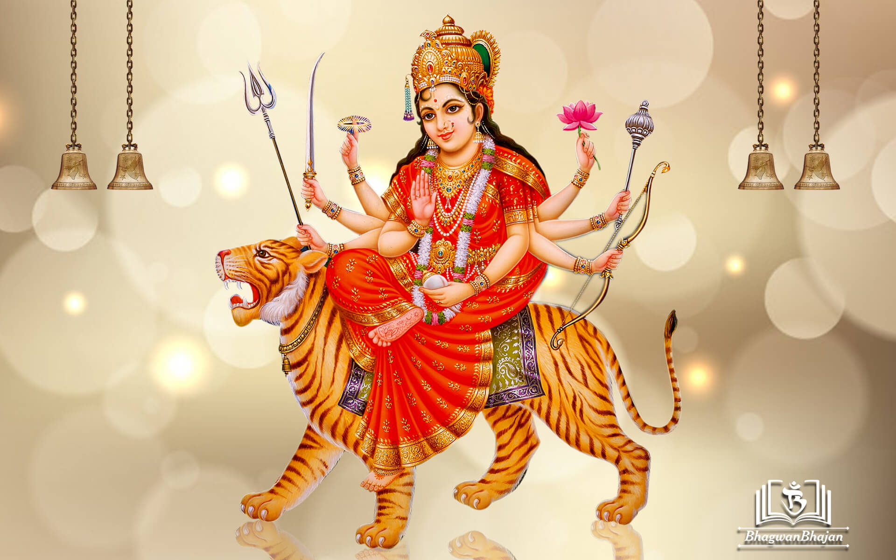
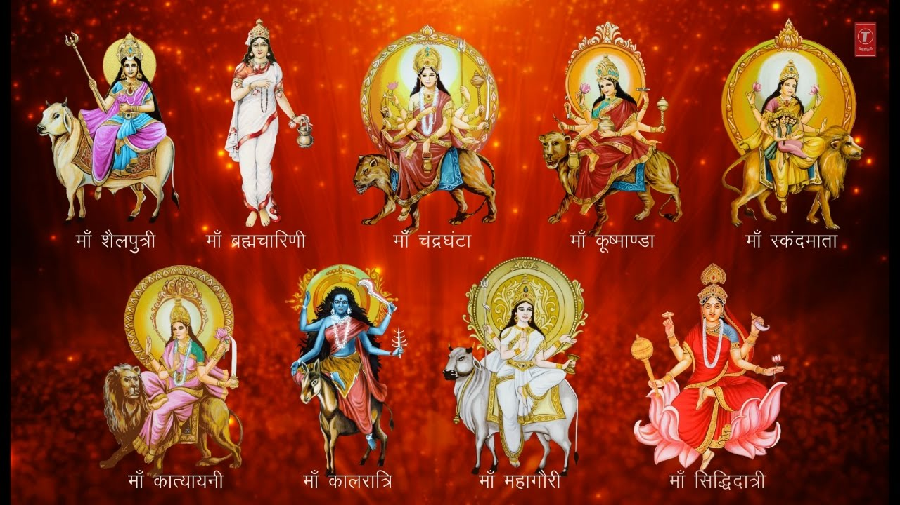

Click on the play button to play a sound:
या देवी सर्वभूतेषु शक्तिरुपेण संस्थिता,
नमस्तस्यै नमस्तस्यै नमस्तस्यै नमो नम:||


Navaratri is a Hindu festival that spans over nine nights (and ten days) and is celebrated every year in the autumn season. It is observed for different reasons and celebrated differently in various parts of the Hindu Indian cultural sphere. Theoretically, there are four seasonal Navaratri. However, in practice, it is the post-monsoon autumn festival called Sharada Navaratri which is the most observed in honour of the divine feminine Devi (Durga). The festival is celebrated in the bright half of the Hindu calendar month Ashvin, which typically falls in the Gregorian months of September and October.
Types of Navratri
Chaitra Navaratri
Further information: Indian New Year's days and Mesha Sankranti
Chaitra Navaratri is the second most celebrated Navaratri, named after vasanta which means spring. It is observed during the lunar month of Chaitra (March–April). In many regions, the festival falls after spring harvest, and in others, during harvest. It also marks the first day of the Hindu lunisolar calendar, also known as the Hindu Lunar New Year, according to the Vikram Samvat calendar.
Magha Navaratri
Magha Navaratri is observed during the lunar month of Magha (January–February). This Navratri is also known as Gupt (secret) Navratri. The fifth day of this festival is often independently observed as Vasant Panchami or Basant Panchami, the official start of spring in the Hindu tradition, wherein goddess Saraswati is revered through arts, music, writing, and kite flying. In some regions, the Hindu god of love, Kama is revered. Magha Navaratri is observed regionally or by individuals
Ashada Navaratri
Ashada Navaratri, also known as Gupta Navaratri, is observed during the lunar month of Ashadha (June–July), during the start of the monsoon season.[23] Ashada Navaratri is observed regionally or by individuals.
Types of Navratri
Chaitra NavaratriFurther information: Indian New Year's days and Mesha Sankranti Chaitra Navaratri is the second most celebrated Navaratri, named after vasanta which means spring. It is observed during the lunar month of Chaitra (March–April). In many regions, the festival falls after spring harvest, and in others, during harvest. It also marks the first day of the Hindu lunisolar calendar, also known as the Hindu Lunar New Year, according to the Vikram Samvat calendar.
Magha Navaratri
Magha Navaratri is observed during the lunar month of Magha (January–February). This Navratri is also known as Gupt (secret) Navratri. The fifth day of this festival is often independently observed as Vasant Panchami or Basant Panchami, the official start of spring in the Hindu tradition, wherein goddess Saraswati is revered through arts, music, writing, and kite flying. In some regions, the Hindu god of love, Kama is revered. Magha Navaratri is observed regionally or by individuals
Ashada Navaratri
Ashada Navaratri, also known as Gupta Navaratri, is observed during the lunar month of Ashadha (June–July), during the start of the monsoon season.[23] Ashada Navaratri is observed regionally or by individuals.
Tempels in india
Famous Temples in North India

Maa Vaishno Devi Temple, Jammu
The Vaishno Devi Temple is an important Hindu temple dedicated to Vaishno Devi located in Katra, Reasi district at the Trikuta Mountains within the Indian state of Jammu & Kashmir. Hindus consider Vaishno Devi as one of the incarnations or forms of Goddess Parvati, Saraswati and Lakshmi.
Location :
Maa Vaishno Devi Temple, Jammu
The Vaishno Devi Temple is an important Hindu temple dedicated to Vaishno Devi located in Katra, Reasi district at the Trikuta Mountains within the Indian state of Jammu & Kashmir. Hindus consider Vaishno Devi as one of the incarnations or forms of Goddess Parvati, Saraswati and Lakshmi.